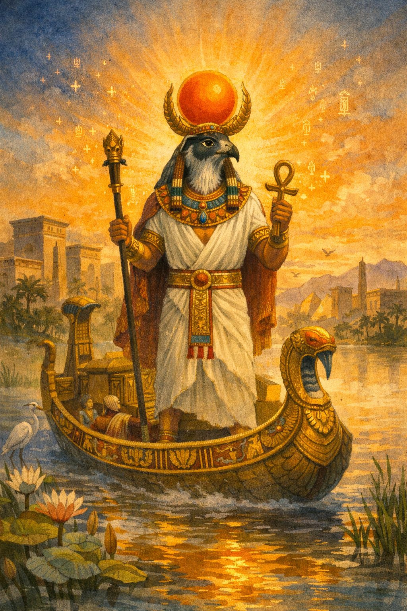
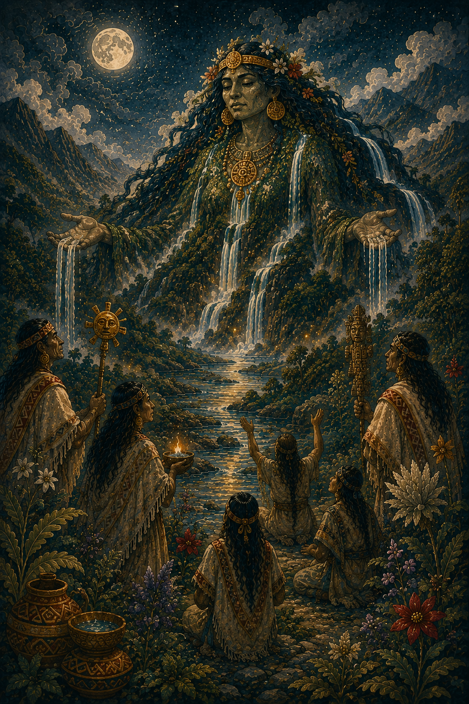
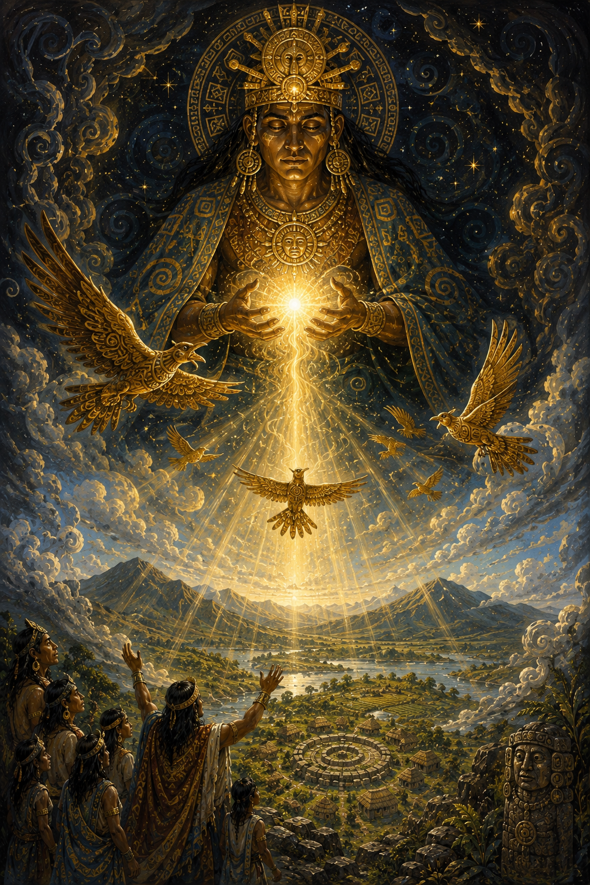
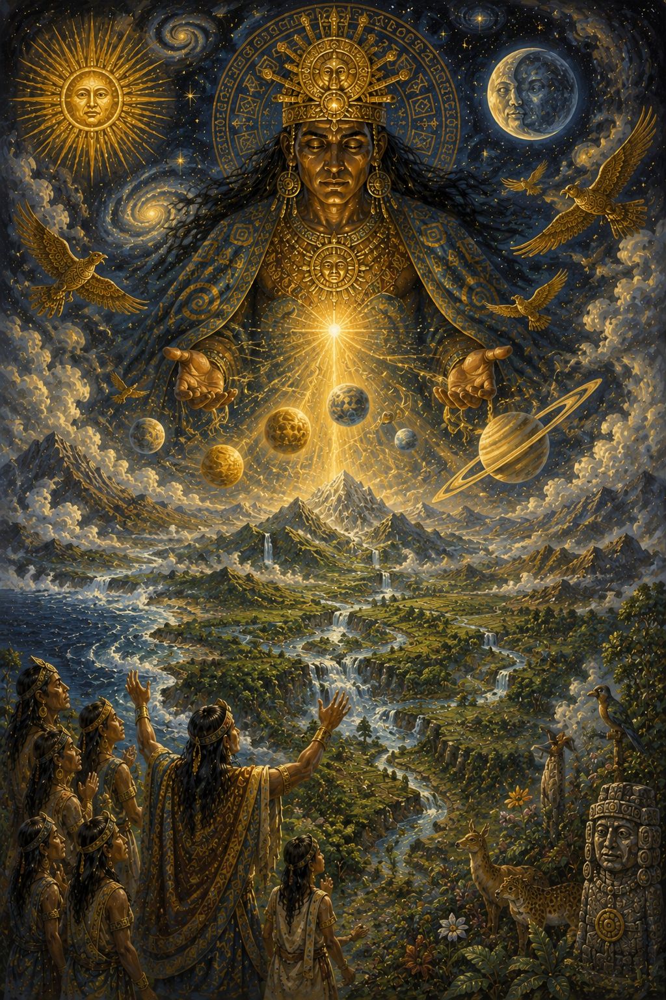
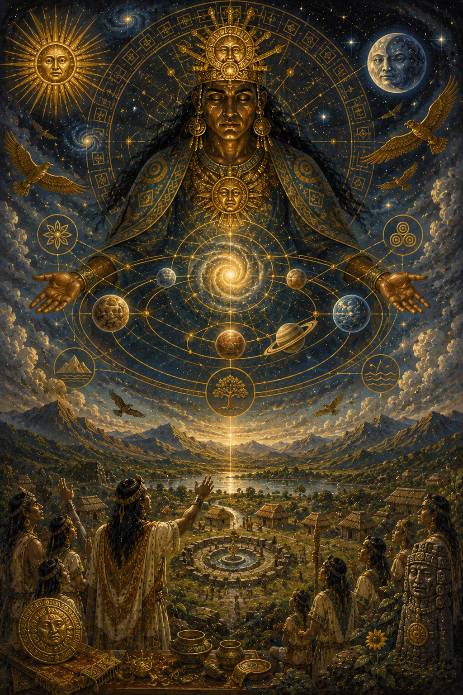
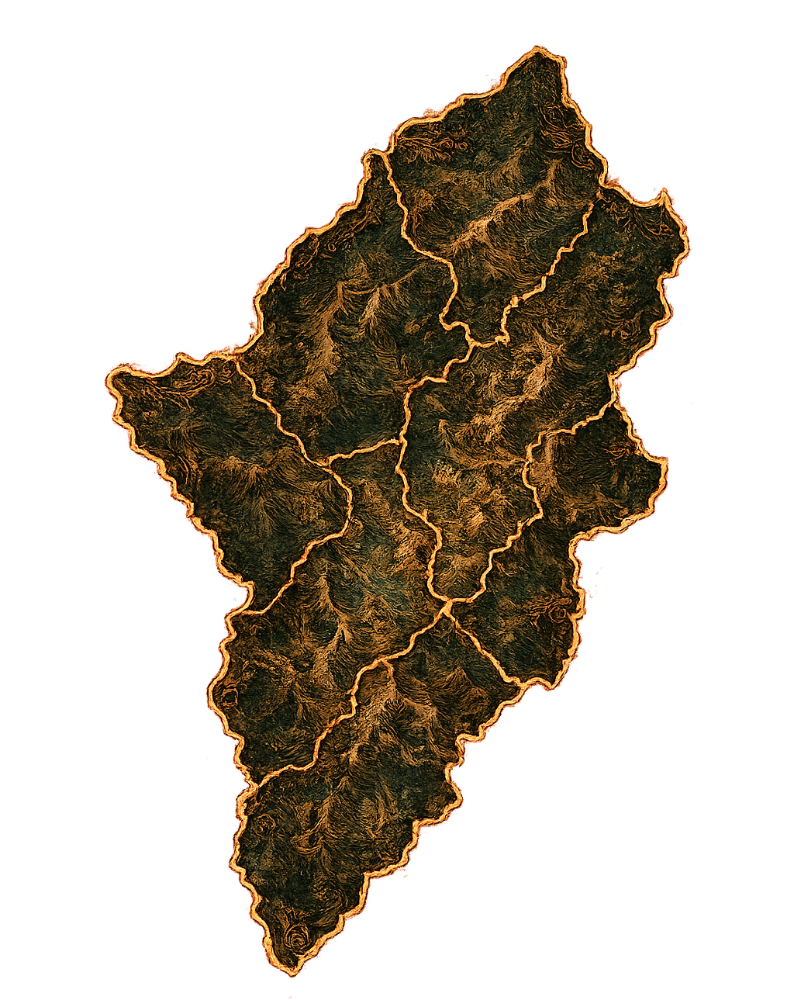
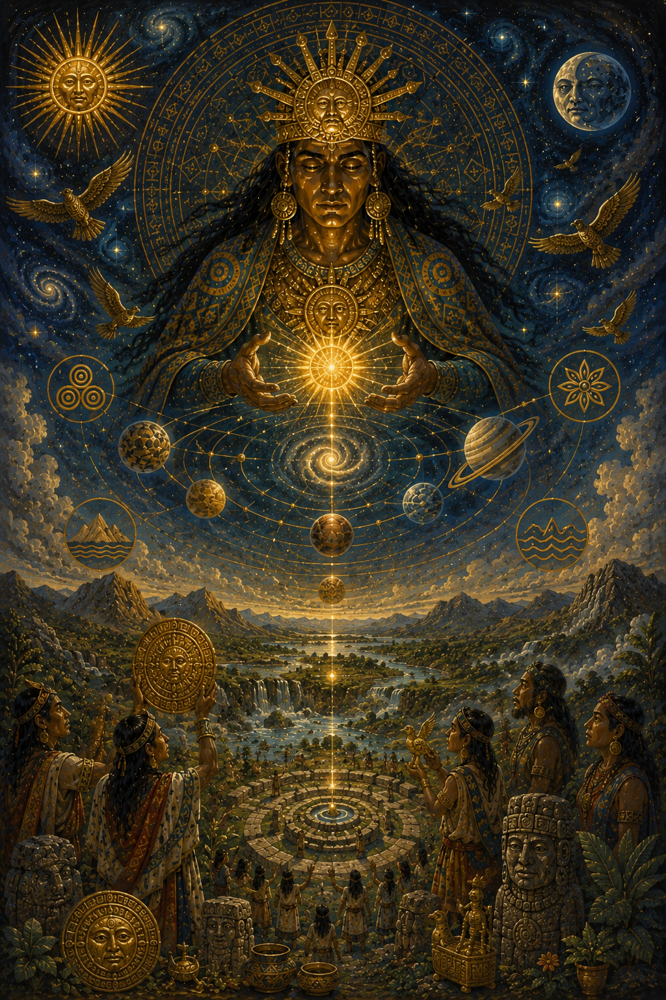
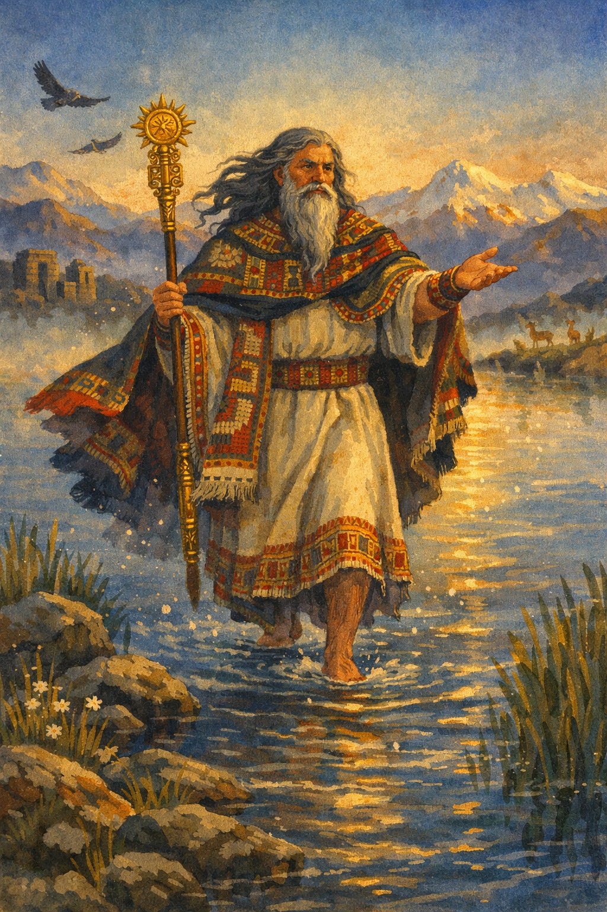
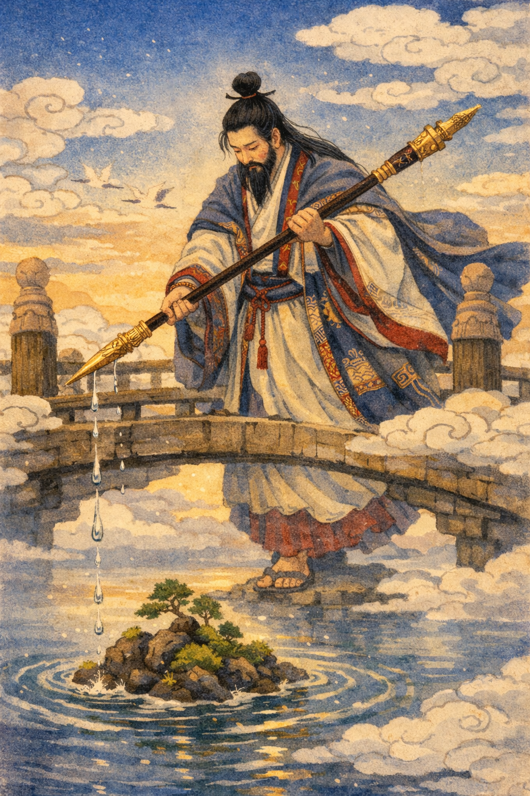

Ra
Dios solar de la mitología egipcia, creador del mundo y símbolo de la luz, el orden y la vida.
Chiminigagua es considerado en la mitología muisca como el origen de la luz y del universo. Se le describe como una fuerza creadora primordial que existía en la oscuridad absoluta antes de la formación del mundo.
Según los relatos, de Chiminigagua surgió la luz que permitió la creación del orden, el cielo, la tierra y todos los seres vivos.

En la cosmogonía muisca, el universo comenzó en completa oscuridad. Chiminigagua contenía la luz dentro de sí mismo, hasta que decidió liberarla para dar inicio a la creación.
Las aves divinas fueron enviadas a dispersar esa luz sobre el mundo, iluminando así el cielo y la tierra.


A partir de la luz liberada por Chiminigagua, el universo comenzó a tomar forma. Surgieron los astros, las montañas, los ríos y toda la naturaleza que compone el mundo.
Este acto representa el paso del caos a la organización del cosmos según la tradición muisca.
Chiminigagua no solo es creador de la luz, sino también símbolo del orden universal. Su presencia representa el equilibrio entre la oscuridad y la claridad.
En la tradición muisca, todo lo existente proviene de esta fuerza primigenia que dio sentido al universo.

Chiminigagua pertenece a la mitología muisca, desarrollada en el Altiplano Cundiboyacense, en el centro de Colombia.
Su figura forma parte de las narraciones cosmogónicas que explican el origen del universo dentro de la cultura indígena muisca.


Chiminigagua representa el origen de la luz, la creación y el orden del universo en la mitología muisca.
Su historia simboliza la transición del caos a la organización del cosmos y refleja la visión espiritual de los pueblos indígenas sobre el origen de la vida.

Dios solar de la mitología egipcia, creador del mundo y símbolo de la luz, el orden y la vida.

Dios creador de la mitología inca, considerado el origen del universo, la civilización y el orden cósmico.

Deidad creadora de la mitología japonesa, responsable de dar forma al mundo y generar la vida junto a otros dioses primordiales.